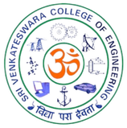
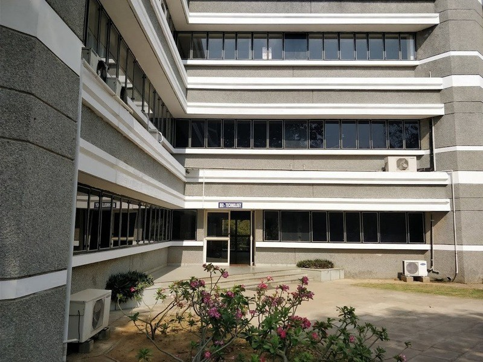
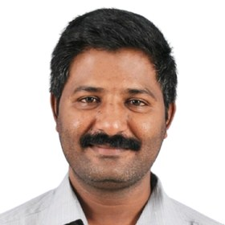

Our story, the HoD’s note, and SVCE Global Connect.
→ 02Fourteen faculty and their areas of research.
→ 03The laboratories and instrumentation our students train on.
→ 04The B.Tech and M.Tech Biotechnology syllabus.
→ 05The graduating cohort — searchable by skill and field.
→ 06Where our graduates go — and how to recruit with us.
→Teaching, research and innovation — aligned with global biotechnology standards and driven by curiosity.
The Department of Biotechnology at Sri Venkateswara College of Engineering, established in 2005, has evolved into a dynamic centre of excellence in teaching, research, and innovation. Equipped with state-of-the-art laboratories in Molecular Biology, Bioprocess Engineering, Bioinformatics, Downstream Processing, and Cell Culture, the department focuses on providing rigorous scientific training aligned with global biotechnology standards. Recognized as a research centre under Anna University, the department supports active Ph.D. research and interdisciplinary collaborations in healthcare, sustainability, and industrial biotechnology.
The department has consistently secured funding from government agencies and industries to support research projects, workshops, STTP programs, and student innovation. National-level seminars, hands-on training workshops, and faculty development events are conducted regularly to enhance professional competencies. Students are encouraged to take part in research internships, industrial training, and entrepreneurial activities, helping them build strong academic and industry-ready profiles.
With a focus on real-world problem solving, strong industry linkage, and global collaborative opportunities, the department remains committed to nurturing future-ready biotechnologists who can contribute meaningfully to science, society, and technology-driven innovation.
International partnerships with leading universities and research organizations give our students exposure and opportunity well beyond the classroom.

The Department of Biotechnology at SVCE has always placed strong emphasis on cultivating a culture of curiosity-driven learning, collaborative problem-solving, and academic integrity. Our core scientific foundation fosters critical thinking and innovation to address pressing global challenges.
We design our curriculum and learning experiences to introduce students early to research, emerging technologies, and interdisciplinary thinking. Through Alumni Mentoring Sessions, Hands-on Workshops, and National/International Symposiums, our students are continuously inspired by experts across diverse fields.
The department maintains active engagement with the global academic community through seminars and guest lectures, many of which are student-led initiatives. We also encourage students to go beyond the classroom by participating in paper and poster presentations, design contests, hackathons, GATE preparation groups, and outreach programs — opportunities that enhance both technical expertise and soft skills.
Our curriculum is regularly reviewed and upgraded in collaboration with academic pioneers and industry advisors, ensuring alignment with the evolving future of biotechnology. Above all, we strive to sustain a learning environment that values openness, mentorship, and accountability. I warmly welcome aspiring students, researchers, and institutional partners to engage with our department and join us in creating solutions for a sustainable and healthier world.
Fourteen faculty members spanning bioprocess engineering, molecular and cell biology, computational biology, and emerging areas like nanoscience and tissue engineering.
Our graduates train on industry-grade instrumentation across molecular biology, bioprocess, downstream processing and analytical science — so they arrive job-ready.
A rigorous, industry-aligned syllabus — from core sciences to genetic engineering, bioprocess and computational biology. Explore it semester by semester.
Organizations that have hired our graduates across R&D, analytics and life sciences — and the universities where our graduates pursue higher study.
The placement cell coordinates the drive end-to-end, then steps back to enable direct communication once an offer is made.
The placement cell disseminates the application link — provided by your company or generated by the cell — to eligible candidates.
The cell forwards the names of interested candidates to your team.
Subsequent selection rounds are conducted according to your company’s specifications.
On completion of the drive, please inform the cell by email with the number and names of selected students.
Once the offer letter is issued, the cell transitions to facilitating direct communication between you and the candidate.
Internship and alumni opportunities follow the same facilitation process through the placement cell.
Only job offers with a minimum CTC of 3 LPA are considered; requests for exceptions are not entertained.
Recruiters are encouraged to share all job prerequisites in advance to keep the process smooth.
Once an appointment is made, no alterations detrimental to the student’s interest may be made to the offered CTC or profile.
To facilitate a drive, we request the following from recruiting companies: